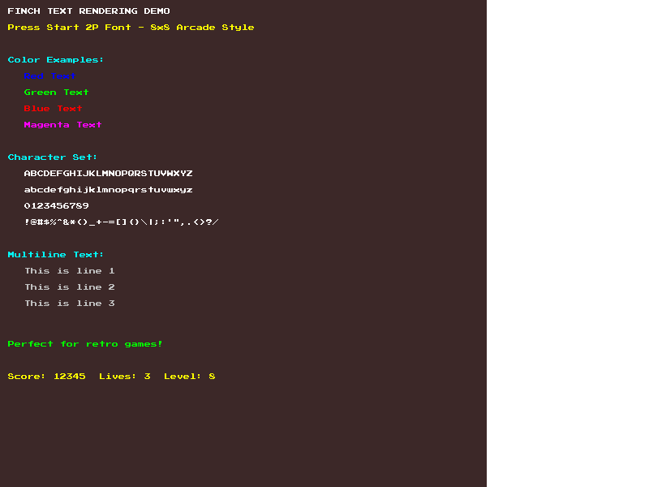
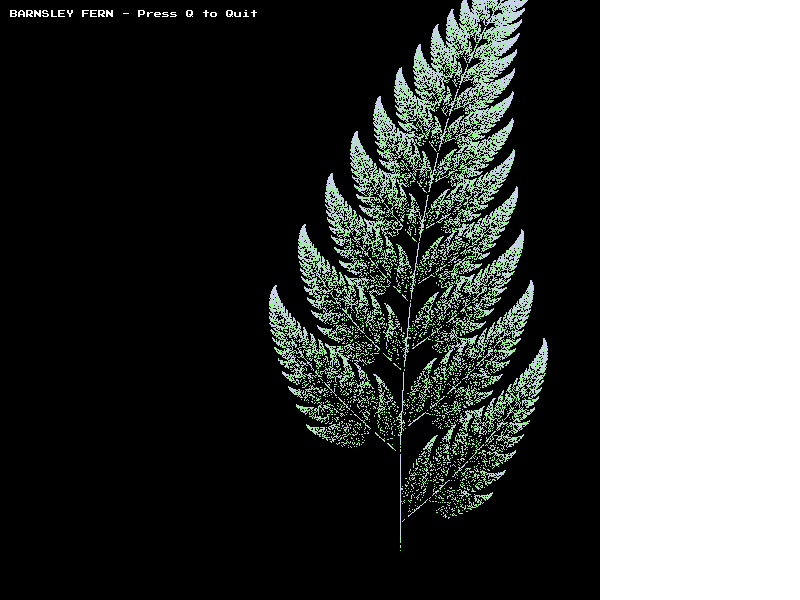
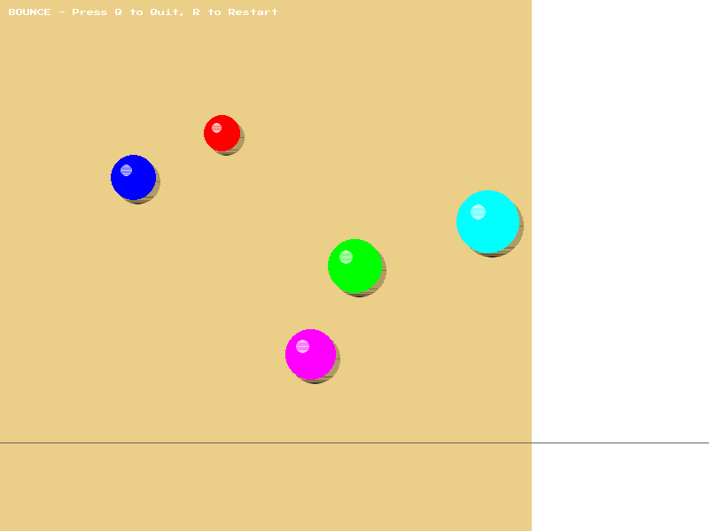

Example Programs
Finch includes three complete example programs that demonstrate various graphics programming concepts. Each example is designed to teach specific techniques and can be used as a starting point for your own projects.
1. Text Rendering Demo
Concepts
Text rendering, FPS counters, mouse tracking, color usage
Description
A comprehensive demonstration of Finch's built-in text rendering capabilities using the Press Start 2P arcade-style font. Shows all available characters, multiple colors, and practical applications like FPS counters and mouse coordinate displays.
Features
- Text drawing at fixed positions
- Centered text alignment
- FPS counter (updates every second)
- Mouse coordinate tracking with crosshair
- Full ASCII character set display (32-126)
- Multiple color demonstrations
Controls
- Move mouse to see coordinates update
- Press 'q' or ESC to quit
Learning Goals
- How to display text and debug information
- Calculating text dimensions for positioning
- Creating HUD (Heads-Up Display) elements
- Mouse input handling
2. Barnsley Fern Fractal
Concepts
Mathematical visualization, iterated function systems, fractals, gradient colors
Description
Creates a beautiful fractal fern using the Barnsley Fern algorithm. This demonstrates how simple mathematical rules applied repeatedly can create complex, natural-looking patterns. The fern is rendered with 100,000 individual pixels, each colored with a gradient that adds depth.
Algorithm
The Barnsley Fern uses four affine transformations selected randomly:
- 1% - Stem (moves toward origin)
- 85% - Main frond (largest part of the fern)
- 7% - Left leaflet
- 7% - Right leaflet
Controls
- Press 'q' or ESC to quit
Learning Goals
- Plotting individual pixels
- Creating mathematical visualizations
- Using randomness in algorithms
- Coordinate system transformations
- Color gradients for visual effects
3. Bouncing Balls Physics Simulation
Concepts
Physics simulation, animation, collision detection, random generation
Description
An interactive physics simulation featuring multiple balls bouncing around the screen. Each ball has random properties (size, position, velocity, color) and bounces realistically off the walls by reversing velocity on collision. Demonstrates how to manage multiple animated objects in a game loop.
Features
- Multiple balls (5 by default) with unique properties
- Random sizes (radius 25-60 pixels)
- Random starting positions
- Random velocities
- Realistic wall collision detection and response
- Colorful visual effects with shadows and highlights
Controls
- Press 'r' to restart with new random balls
- Press 'q' or ESC to quit
Learning Goals
- Animation and frame timing
- Physics simulation (velocity, position updates)
- Collision detection (wall bounces)
- Managing multiple game objects
- Drawing filled and outlined circles
- Random number generation for variety
Example Complexity
The examples are ordered by increasing complexity:
| Example | Complexity | Best For |
|---|---|---|
| text_demo.c | Beginner | Understanding Finch callbacks and basic rendering |
| fern.c | Intermediate | Mathematical visualization and pixel-level drawing |
| bounce.c | Advanced | Animation, physics, and interactive controls |
Building and Running
Build All Examples
cd examples
make allRun Individual Examples
./text_demo # Text rendering
./fern # Fractal visualization
./bounce # Physics simulationOr Use Makefile
make run EXAMPLE=bounceModifying the Examples
Each example is well-commented and designed to be modified. Try these experiments:
text_demo.c
- Change text colors
- Add more information displays
- Display additional mouse information
- Create a score display for a game
fern.c
- Adjust transformation probabilities
- Change the color gradient formula
- Modify scale or position
- Increase MAX_ITER for more detail
- Try other IFS fractals (Sierpinski triangle, etc.)
bounce.c
- Change NUM_BALLS or ball size ranges
- Add ball-to-ball collisions
- Implement gravity
- Create trails behind balls
- Add mouse interaction (click to create balls)
- Add energy loss on bounce (damping)
Next Steps
After exploring these examples, you can:
- Read the complete tutorial for step-by-step guidance
- Check the API reference for all available functions
- Create your own projects using these as templates
- Combine concepts from multiple examples
- Share your creations with the community on GitHub